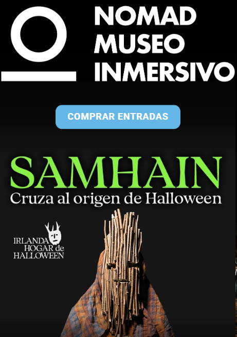

Samaín, Magosto y Noche de Ánimas
Madrid — Sábado 31 de Octubre de 2026
Tabla Comparativa Rápida de Eventos
| Nº | Evento | Horario | Precio | Ubicación | Sitio Web |
|---|---|---|---|---|---|
| 01 | Samhain: un portal entre dos mundos | 12:00–14:00 h / 17:00–21:00 h | Gratuito (0,60 €) | Gran Vía, 78 | Ver sitio |
| 02 | Leyendas y Tradiciones (Chapinería) | 11:00 h | Gratuito | Chapinería | Ver sitio |
| 03 | Noche de Ánimas: Circo Maldito | 20:00 h (Dom 1 Nov) | 7,00 € | Villar del Olmo | Ver sitio |
| 04 | Jornadas Gastronómicas del Magosto | 12:00–00:30 h | Según consumo | C/ Alcántara, 15 | Ver sitio |
| 05 | Halloween Night: Area 51 | 22:00–05:00 h | Entrada libre | Av. de Brasil, 7 | Ver sitio |
| 06 | SAMA – The Halloween Experience | 23:00 h / 00:00 h | Desde 15,50 € | C/ Bailén, 16 | Ver sitio |
| 07 | Celtas, castaños y magosto | 11:00–12:30 h (Dom 1 Nov) | Gratuito (Reserva) | El Escorial | Ver sitio |
| 08 | Samaín Casero: Ritual en Casa | A tu ritmo / Noche | Gratuito / Casero | Tu Hogar | Ver guía |